Für Imkerinnen und Imker. Ohne Technikkenntnisse.
Dieses Handbuch führt Sie durch Aufbau, Montage, Einrichtung und Kalibrierung Ihrer TanenBase Stockwaage. Sie brauchen dafür kein Elektronikwissen und keine App.
Die TanenBase steht unter Ihrem Bienenstock und macht drei Dinge:
So sehen Sie von zu Hause aus, ob der Nektar fließt, ob geschwärmt wurde oder ob ein Volk plötzlich leichter wird — ohne den Stock zu öffnen.
Zwischen den Messungen schläft die Station fast vollständig. Ein Satz Batterien hält deshalb rund viereinhalb Jahre — bei einer Messung alle 15 Minuten und einer Meldung alle zwei Stunden. Wer seltener messen und melden lässt, kommt auf deutlich mehr: bei stündlicher Messung und Meldung alle vier Stunden sind es rechnerisch etwa zehn Jahre.
Wichtig: Die Station braucht keinen Netzstrom und kein WLAN. Nur die eingelegten Batterien und Funkempfang am Standort.
| Teil | Wozu |
|---|---|
| Wägezelle (Bosche H40A-C3-0150) | Der eigentliche Gewichtssensor. Sitzt mittig unter der Waage. |
| Waagengestell | Zwei Platten (oben/unten), zwischen denen die Wägezelle sitzt. Selbst gebaut oder fertig gekauft. |
| Elektronik-Gehäuse | Wetterfeste Box mit durchsichtigem Deckel. Darin steckt die Technik. |
| Roter Knopf | Seitlich am Gehäuse. Damit starten Sie die Einrichtung. |
| Aufkleber mit QR-Code | Auf der Box. Enthält die Gerätenummer (DevEUI) Ihrer Station. |
| Zwei Kabelverschraubungen | Unten an der Box. Hier gehen die Kabel wasserdicht heraus. |
| Temperaturfühler | Wasserdichter Fühler am Kabel. Kommt an die Wägezelle (siehe Kapitel 2.4). |
| Batterien — 3 × AAA Lithium (1,5 V, 1200 mAh, z. B. BEVIGOR) | Versorgen alles. In Reihe ergeben sie frisch rund 5,2 Volt. Nicht aufladbar! |
| Antenne | Liegt im Gehäuse. Nicht knicken, nicht mit Metall abdecken. |
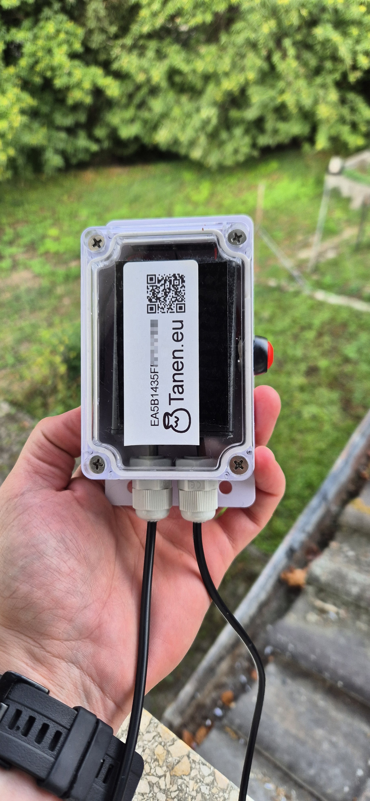
[Bild 1: Die geschlossene Station] — Gut zu sehen: der rote Knopf rechts am Gehäuse, der Aufkleber mit QR-Code und Gerätenummer („EA5B1435F…") und die zwei Kabelverschraubungen unten, aus denen die beiden schwarzen Kabel kommen.

[Bild 2: Blick in die geöffnete Station] — Nur für den Notfall wichtig. Sie sehen die Platine, den kleinen Schiebeschalter „OFF / ON" oben rechts, die blaue Klemme für den Temperaturfühler und die grüne Klemme für die Wägezelle. Im Normalbetrieb bleibt der Deckel zu.
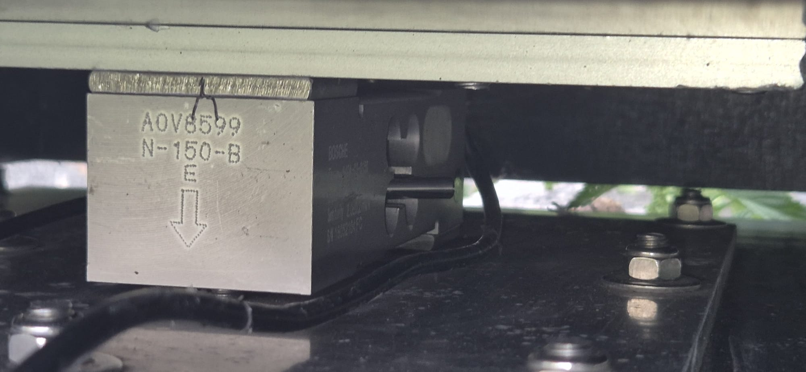
[Bild 3: Die Wägezelle aus der Nähe] — Auf dem hellen Aluminiumblock steht die Nummer N-150-B und darunter ein Pfeil nach unten (⇓). Dieser Pfeil muss beim Einbau nach unten zeigen. Merken Sie sich das — es ist der häufigste Montagefehler.
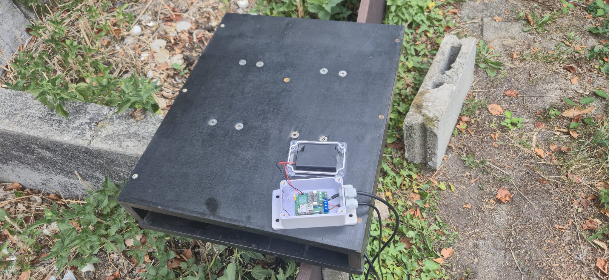
[Bild 4: Die fertige Waage im Feld] — Schwarz lackierte Holzplattform, das Elektronik-Gehäuse ist an der Kante festgeschraubt, die Kabel laufen nach unten.
Werkzeug
Zum Kalibrieren
Zum Einrichten
⚠️ iPhone und iPad funktionieren nicht. Safari und Firefox ebenfalls nicht. Diese Browser können die Bluetooth-Verbindung zur Station technisch nicht aufbauen. Leihen Sie sich für die Einrichtung ein Android-Gerät oder nehmen Sie einen Laptop mit.
In der Mitte zwischen zwei Platten sitzt eine einzige Wägezelle, die die komplette obere Platte trägt. Deshalb ist es egal, wo genau auf der Plattform der Stock steht — das Gewicht stimmt trotzdem.
Diese Bauart heißt Single-Point-Zelle. Sie ist der Grund, warum die Waage so einfach zu bauen ist.
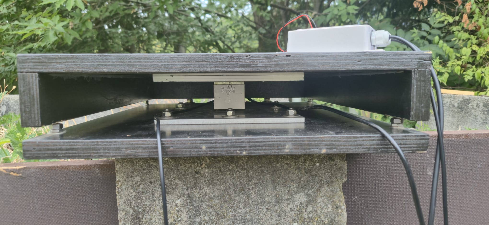
[Bild 5: Der Aufbau von der Seite] — Sehr gut zu erkennen: unten die Bodenplatte, oben der Rahmen, und genau dazwischen in der Mitte die silberne Wägezelle mit ihren beiden Verteilerplatten. Die obere Platte schwebt — sie berührt nur die Wägezelle, sonst nichts.
Sie können jedes Gestell verwenden, das stabil ist. Eine sehr gute, bebilderte Bauanleitung finden Sie hier:
👉 HoneyPi — Aufbau des Waagengestells
Ob Sie Holz, Alu-Profil oder Stahl verwenden, ist Ihnen überlassen. Wichtig ist allein, dass die Wägezelle richtig eingebaut ist. Halten Sie sich dabei an die folgenden fünf Regeln.
Regel 1 — Der Pfeil zeigt nach unten
Auf der Wägezelle ist ein Pfeil (⇓) eingraviert (siehe Bild 3). Er zeigt in die Richtung, aus der die Last kommt — also nach unten zum Boden. Falsch herum eingebaut misst die Waage negativ oder gar nicht.
Regel 2 — Fest verschraubt zwischen zwei steifen Platten
Regel 3 — Die obere Platte muss frei schweben
Das ist die wichtigste Regel überhaupt.
💡 Merksatz: Was die obere Platte berührt, wird nicht mitgewogen. Ein einziger Grashalm kann Ihnen ein halbes Kilo Honigertrag verstecken.
Regel 4 — Kabel nach unten, mit Schlaufe
Das Kabel der Wägezelle läuft nach unten weg (siehe Bild 5). Legen Sie kurz vor dem Gehäuse eine Tropfschlaufe — eine Hängeschlaufe nach unten —, damit Wasser am Kabel abtropft und nicht in die Verschraubung läuft. Befestigen Sie das Kabel mit Kabelbindern, aber niemals stramm gespannt. Zug am Kabel verfälscht die Messung.
Regel 5 — Nicht überlasten
Die Zelle verträgt 150 kg. Ein Stock wiegt selten mehr als 60 kg. Trotzdem: nicht draufsteigen, nicht als Hebel benutzen, nichts draufwerfen. Ein einziger harter Stoß kann die Zelle dauerhaft verbiegen.
Das ist der Trick, der Ihre Waage genau macht.
Warum? Metall dehnt sich bei Wärme aus. Die Wägezelle zeigt bei Sonne deshalb ein anderes Gewicht an als nachts — obwohl sich am Stock nichts geändert hat. Die Station rechnet diesen Fehler automatisch heraus. Dafür muss sie aber wissen, wie warm die Wägezelle gerade ist. Nicht die Luft. Nicht der Stock. Die Zelle.
So machen Sie es richtig:
[Foto einfügen: Temperaturfühler mit Kabelbindern an der Wägezelle befestigt, Nahaufnahme von unten]
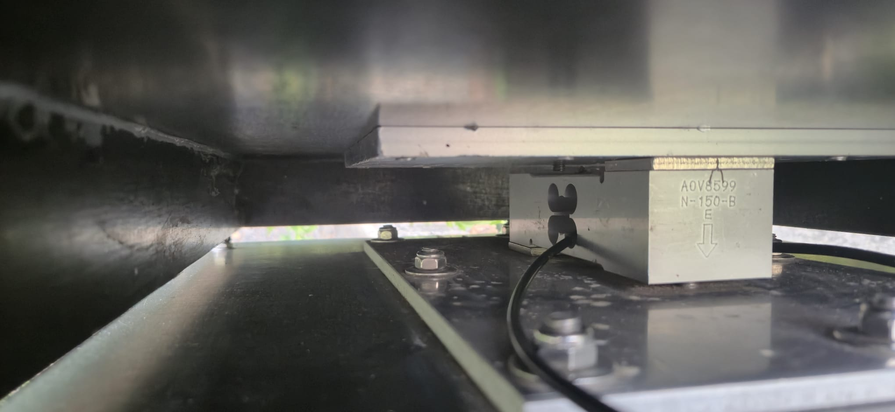
[Bild 6: Einbaulage der Wägezelle] — So sieht der fertige Einbau von unten aus. Der Temperaturfühler gehört an diesen Aluminiumblock.
ℹ️ Hinweis: Wenn Sie stattdessen die Temperatur im Stock messen wollen, stecken Sie den Fühler in den Stock. Dann verlieren Sie aber die automatische Korrektur, und Ihr Gewicht schwankt über den Tag um mehrere hundert Gramm. Unsere klare Empfehlung: Fühler an die Wägezelle.
[Foto einfügen: Elektronik-Gehäuse an der Plattform verschraubt, Kabelverschraubungen nach unten, Tropfschlaufen sichtbar]
[Foto einfügen: Bienenstock steht mittig auf der Plattform, Gesamtansicht am Bienenstand]
[Foto einfügen: Wasserwaage längs und quer auf der oberen Platte]
⚠️ Nur AAA-Lithiumzellen (Lithium-Metall, 1,5 V — die verbauten sind BEVIGOR AAA Lithium, gleichwertig ist z. B. Energizer Ultimate Lithium AAA). Keine Alkaline-Batterien — die laufen im Freien aus und brechen bei Frost ein. Keine Akkus. Lithiumzellen halten bis −40 °C durch und lagern jahrelang, ohne sich selbst zu entleeren.
Öffnen Sie in Chrome oder Edge:
Alternativ: QR-Code auf dem Aufkleber scannen — der führt zur selben Seite.
Sie brauchen keine App und müssen nichts installieren. Die Seite läuft im Browser.
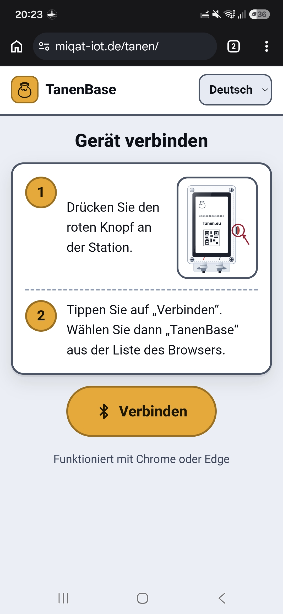
[Bild 7: Startseite „Gerät verbinden"] — Oben rechts stellen Sie die Sprache um (Deutsch / English / عربي). In der Mitte stehen die beiden Schritte, unten der große gelbe Knopf „Verbinden".
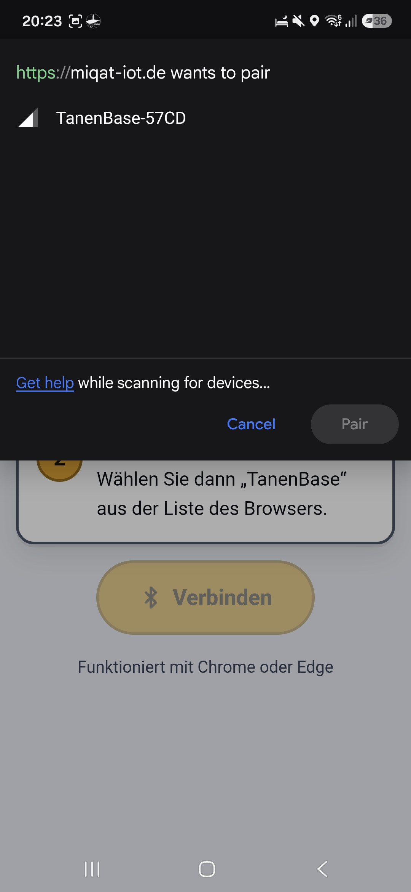
[Bild 8: Der Browser fragt nach dem Gerät] — Hier erscheint „TanenBase-57CD". Antippen, dann rechts unten auf „Pair".
⚠️ Erscheint kein Gerät? Dann ist der Einrichtungs-Modus abgelaufen. Drücken Sie den roten Knopf einfach noch einmal und tippen Sie erneut auf „Verbinden".
Nach dem Verbinden landen Sie auf der Übersicht.
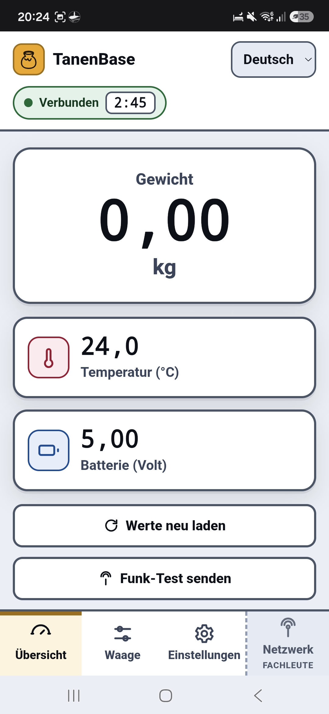
[Bild 9: Die Übersicht]
| Was Sie sehen | Was es bedeutet |
|---|---|
| Grüne Blase „Verbunden" mit Countdown (z. B. 2:45) | Die Verbindung steht. Der Countdown zeigt, wie lange der Einrichtungs-Modus noch läuft. |
| Große Zahl „Gewicht … kg" | Das aktuelle Gewicht, live. Aktualisiert sich alle paar Sekunden. |
| Temperatur (°C) | Was der Fühler gerade misst. |
| Batterie (Volt) | Spannung aller drei Zellen zusammen. Frisch ≈ 5,2 V. Der Wert bleibt sehr lange fast gleich — das ist normal und kein Zeichen, dass nichts gemessen wird. Erst am Ende fällt er zügig. Ab unter 3,6 V wechseln. |
| „Werte neu laden" | Fragt alle Werte sofort neu ab. |
| „Funk-Test senden" | Schickt einmalig ein Testsignal ins Funknetz. Damit prüfen Sie, ob am Standort Empfang ist. |
Ganz unten sind die vier Reiter:
Gehen Sie auf den Reiter „Einstellungen".
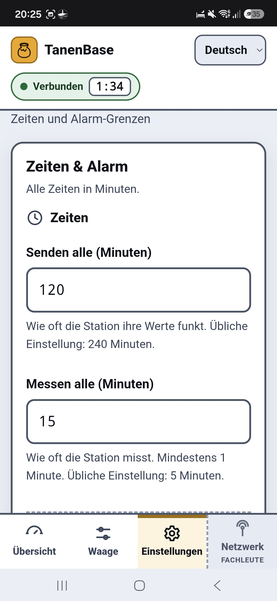
[Bild 10: Zeiten & Alarm]
| Feld | Was es bedeutet | Empfehlung |
|---|---|---|
| Senden alle (Minuten) | Wie oft die Station funkt. | 240 (alle 4 Stunden). Häufiger senden verkürzt die Batterielaufzeit. |
| Messen alle (Minuten) | Wie oft die Station intern misst. | 5 bis 15 |
| Alarm-Grenze Gewicht (kg) | Ändert sich das Gewicht plötzlich stärker, meldet sich die Station sofort — auch außerhalb der normalen Sendezeit. | 2,0 kg (erkennt Schwarm, Diebstahl, Umsturz) |
| Alarm-Grenze Temperatur (°C) | Dasselbe für die Temperatur. | 5,0 °C |
Tippen Sie danach auf den grünen Knopf „Einstellungen speichern". Es erscheint kurz die Meldung „Gespeichert".
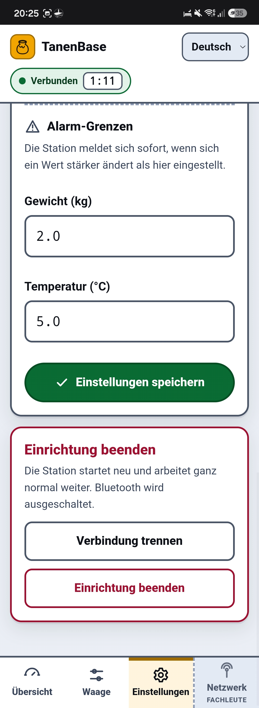
[Bild 11: Alarm-Grenzen und „Einrichtung beenden"]
Erst kalibrieren (Kapitel 4), dann beenden!
Wenn alles erledigt ist:
Jetzt können Sie den Deckel festschrauben.
ℹ️ Der Einrichtungs-Modus endet auch von selbst nach 3 Minuten. Es geht nichts verloren — alles Gespeicherte bleibt gespeichert. Sie kommen jederzeit wieder hinein: roter Knopf, „Verbinden".
Kalibrieren heißt: der Waage beibringen, was ein Kilogramm ist. Das machen Sie einmal beim Aufbau — und danach nur noch selten.
Tipp 1 — Erst fertig aufbauen, dann kalibrieren. Die Waage muss an ihrem endgültigen Platz stehen, ausgerichtet und festgeschraubt. Kalibrieren Sie nie auf der Werkbank.
Tipp 2 — Kalibrieren Sie bei „normaler" Temperatur, im Schatten. Die Station merkt sich beim Nullsetzen, wie warm es gerade war, und benutzt das als Bezugspunkt für ihre Temperaturkorrektur. Kalibrieren Sie deshalb nicht in der prallen Mittagssonne und nicht im Frost, sondern bei einer Temperatur, wie sie am Stand üblich ist. Morgens oder am frühen Abend ist ideal.
Tipp 3 — Kennen Sie Ihr Referenzgewicht wirklich? „So ungefähr 10 Kilo" reicht nicht. Wiegen Sie Kanister oder Stein vorher auf einer Personen- oder Kofferwaage ab. Ein 10-Liter-Kanister randvoll mit Wasser wiegt 10,0 kg — das ist die einfachste zuverlässige Lösung.
Sie sehen jetzt den Ablauf in drei Schritten — oben zeigen die Kreise 1 – 2 – 3, wo Sie gerade sind.
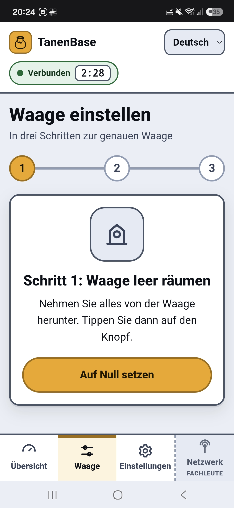
[Bild 12: „Schritt 1: Waage leer räumen"]
Zuerst entscheiden Sie, was Sie messen wollen:
| Variante | Was Sie tun | Was die Waage später anzeigt |
|---|---|---|
| A — Gesamtgewicht ⭐ empfohlen | Plattform komplett leer räumen (auch den Stock herunternehmen) | Das gesamte Gewicht: Beute + Waben + Bienen + Honig |
| B — Nur der Zuwachs | Die leere Beute stehen lassen und darauf tarieren | Nur das, was dazukommt — also im Wesentlichen der Honig |
Wir empfehlen Variante A. Das Gesamtgewicht ist die aussagekräftigere Zahl, und Auswerteplattformen wie BEEP oder beelogger erwarten sie so.
So geht es:
Kontrolle: Wechseln Sie kurz auf „Übersicht". Dort muss jetzt 0,00 kg stehen (Abweichungen von ein paar Gramm sind normal).
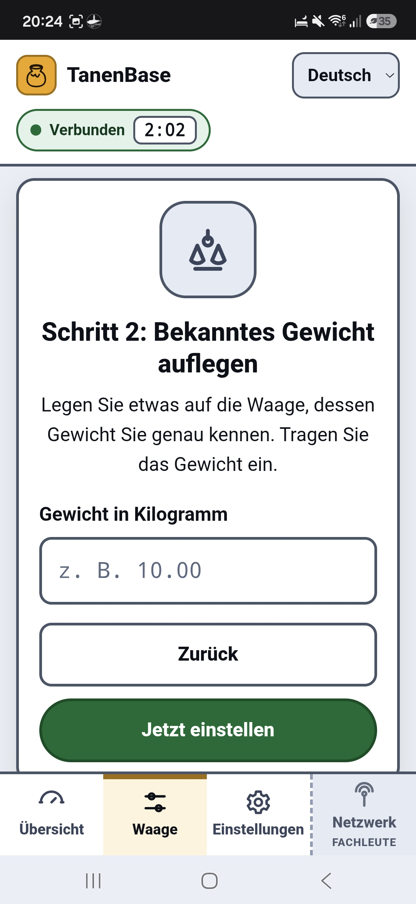
[Bild 13: „Schritt 2: Bekanntes Gewicht auflegen"]
Legen Sie Ihr Referenzgewicht mittig auf die Plattform — den vollen Wasserkanister, einen abgewogenen Betonstein, Hantelscheiben.
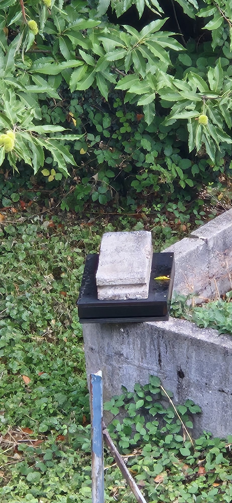
[Bild 14: Referenzgewicht auf der Plattform] — Hier wurde ein abgewogener Betonstein verwendet.
Warten Sie 5–10 Sekunden, bis sich nichts mehr bewegt.
Tragen Sie im Feld „Gewicht in Kilogramm" den genauen Wert ein.
10.0010.00; abgewogener Stein 12,4 kg → 12.40Tippen Sie auf den grünen Knopf „Jetzt einstellen".
⚠️ Erscheint „Bitte zuerst das Gewicht eintragen", ist das Feld noch leer.
Es erscheint der grüne Haken und der Text:
„Fertig! Die Waage ist eingestellt."
Darunter stehen zwei Zahlen:
Notieren Sie sich beide Zahlen oder machen Sie einen Screenshot. Wenn später etwas seltsam aussieht, kann Ihr Betreuer damit sofort etwas anfangen.
Alles gut? Dann Stock wieder aufsetzen, auf „Einstellungen" gehen und „Einrichtung beenden" tippen. Deckel zuschrauben. Fertig.
💡 Wenn Sie nach Variante A tariert haben, zeigt die Waage jetzt das Gesamtgewicht Ihres Stocks. Notieren Sie diesen Startwert in Ihrem Stockbuch.
| Problem | Ursache & Lösung |
|---|---|
| „Dieser Browser kann kein Bluetooth" | Sie benutzen Safari, Firefox oder ein iPhone. → Chrome oder Edge auf Android/Laptop verwenden. |
| Nach „Verbinden" erscheint keine Liste | Bluetooth am Handy aus. → Einschalten. Auf Android zusätzlich den Standort einschalten. |
| Liste ist leer / kein „TanenBase" | Der Einrichtungs-Modus (3 Minuten) ist abgelaufen. → Roten Knopf erneut kurz drücken, dann sofort wieder „Verbinden". |
| Weiterhin nichts | Batterie leer oder Schalter auf OFF. → Deckel öffnen, Schalter auf ON, Batterie prüfen. |
| Verbindung bricht ab | Zu weit weg. → Näher als 5 Meter an die Station gehen. |
| Nach 3 Minuten ist alles weg | Das ist normal. Die Station spart Strom. Roter Knopf → neu verbinden. |
| Problem | Ursache & Lösung |
|---|---|
| Wert springt wild hin und her | Etwas berührt die obere Platte: Gras, Stein, Kabel, Nachbarbeute, Spanngurt. → Spalt rundum freimachen (Regel 3). |
| Anzeige immer 0,00 kg, egal was drauf liegt | Kabel der Wägezelle sitzt nicht fest in der Klemme. → Deckel öffnen, grüne Klemme prüfen. |
| Wert ist negativ | Beim Nullsetzen lag noch etwas auf der Waage, das jetzt fehlt. → Neu tarieren (Kapitel 4.4). |
| Wert wandert über den Tag um mehrere hundert Gramm | Sonne auf Plattform oder Wägezelle — oder der Temperaturfühler liegt nicht mehr an der Zelle an. → Fühler prüfen und neu befestigen (Kapitel 2.4), Waage beschatten. |
| Wert ist konstant zu hoch oder zu niedrig | Nullpunkt hat sich verschoben (Waage umgestellt, Boden gesackt). → Neu tarieren. |
| Wert ändert sich, je nachdem wo das Gewicht liegt | Wägezelle nicht fest oder verkantet. → Alle Schrauben nachziehen, mit der Wasserwaage neu ausrichten. |
| Plötzlich +200 g nach Regen | Das ist echt — Holz und Beute saugen Wasser. Nach ein bis zwei trockenen Tagen ist es wieder weg. |
| Problem | Ursache & Lösung |
|---|---|
| Temperatur zeigt „--" oder unsinnige Werte | Fühlerkabel lose oder gebrochen. → Blaue Klemme im Gehäuse prüfen (Bild 2). Bei Bruch Fühler tauschen. Die Waage wiegt weiter — nur ohne Temperaturkorrektur. |
| Temperatur viel höher als die Luft | Fühler liegt in der Sonne. → In den Schatten unter die Plattform verlegen. |
| Batterie unter 3,6 V | Zellen am Ende. → Alle drei gegen neue AAA-Lithiumzellen tauschen. Die Kalibrierung bleibt erhalten. |
| Batterie neu, aber Anzeige niedrig | Eine Zelle sitzt falsch herum oder hat schlechten Kontakt. → Alle drei prüfen, Kontakte säubern. Alte und neue Zellen nie mischen. |
| Keine Daten kommen an | Kein Funkempfang am Standort. → Über „Funk-Test senden" prüfen; Gehäuse höher setzen, Metall über der Antenne entfernen, ggf. Betreuer wegen Gateway-Abdeckung fragen. |
| Daten kommen an, aber nicht bei BEEP / beelogger | Gerät ist auf der Plattform nicht korrekt eingetragen. → Kapitel 6. |
⚠️ Niemals selbst tun: Batterie laden, USB anschließen, im Reiter „Netzwerk" Zahlen ändern. Bei Funkproblemen wenden Sie sich an die Person, die Ihre Station eingerichtet hat.
Bei jedem Besuch am Stand (30 Sekunden)
Im Frühjahr
Im Herbst
Beim Umstellen der Waage
Was Sie nie tun sollten
Ihre Station schickt ihre Werte über das Funknetz TTN (The Things Network). Von dort können sie an eine kostenlose Auswerteplattform weitergereicht werden, die daraus Diagramme macht und die Messreihen aufbewahrt. Zwei Plattformen werden unterstützt:
| Plattform | Was sie ist |
|---|---|
| BEEP (beep.nl) | Offene Plattform aus den Niederlanden mit Diagrammen und digitalem Stockbuch. Im Feld erprobt. |
| beelogger (beelogger.de) | Offenes deutschsprachiges Projekt rund um Stockwaagen; sein Community-Server nimmt dieselben Werte entgegen. Im Feld erprobt. |
Sie müssen sich nicht entscheiden: Es ist derselbe Funkspruch, und die Umsetzung in TTN liefert beide Formate gleichzeitig. Sie können also eine Plattform nutzen oder beide.
ℹ️ Voraussetzung: Ihre Station muss bereits im Funknetz TTN (The Things Network) angemeldet sein und in Reichweite eines Gateways stehen. Das richtet in der Regel die Person ein, von der Sie die Station bekommen haben. Nur der letzte Schritt — das Gerät bei der Plattform eintragen — ist Ihre Aufgabe.
EA5B1435F…)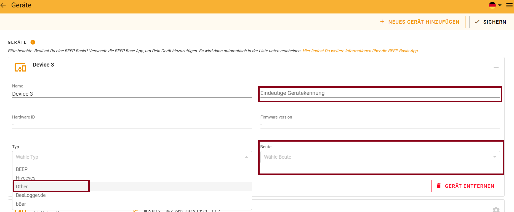
[Bild 15: Die Seite „Geräte" bei BEEP] — Die drei dunkelrot umrandeten Felder sind die entscheidenden.
| Feld | Was eintragen |
|---|---|
| Name | Ein Name Ihrer Wahl, z. B. „Waage Streuobstwiese" |
| Eindeutige Gerätekennung | Ihre DevEUI vom Aufkleber — genau so, ohne Leerzeichen |
| Typ | Aus der Liste „Other" auswählen |
| Beute | Den Bienenstock auswählen, auf dem die Waage steht |
| Hardware ID / Firmware version | Leer lassen — füllt sich später von selbst |
Beim nächsten Funkspruch Ihrer Station erscheinen die Werte in BEEP. Das kann je nach Einstellung bis zu vier Stunden dauern. Wenn Sie nicht warten wollen: roter Knopf → „Funk-Test senden".
Wenn Sie lieber den beelogger-Community-Server nutzen — oder zusätzlich zu BEEP:
ℹ️ Die Werte heißen bei beelogger Gewicht, TempOut und VBatt. Das ist derselbe Messwert wie bei BEEP, nur anders benannt.
🔧 Für Fachleute: Ein einziger Webhook reicht für alle Waagen einer TTN-Anwendung:
https://community.beelogger.de/<benutzername>/{/devID}/beelogger_log.php?Passwort=<passwort>&LORA=1{/devID}setzt TTN bei jedem Funkspruch selbst ein — die Geräte müssen in TTN deshalbbeelogger1,beelogger2, … heißen, passend zu den Stationen auf dem Community-Server. Das Passwort ist für alle Waagen dasselbe; genau deshalb genügt der eine Webhook.LORA=1sagt dem Server, dass der Wert über LoRaWAN kommt.
🔧 Für Fachleute: In TTN wird als Uplink-Formatter
ttndecoder/tanen-decoder.jseingetragen. Er entschlüsselt den 8-Byte-Rahmen einmal und gibt beide Namenssätze zugleich aus —weight_kg/t/bvfür BEEP,Gewicht/TempOut/VBattfür beelogger; jede Plattform speichert, was sie kennt. Der BEEP-Webhook muss die Gerätenummer zusätzlich explizit in der URL mitführen, sonst verwirft BEEP die Daten stillschweigend:https://api.beep.nl/api/lora_sensors?key=<DevEUI>
Waage aufstellen
Einrichten & kalibrieren
10.00) → „Jetzt einstellen"Im Zweifel: Roter Knopf, verbinden, Werte anschauen. Kaputtmachen können Sie dabei nichts.